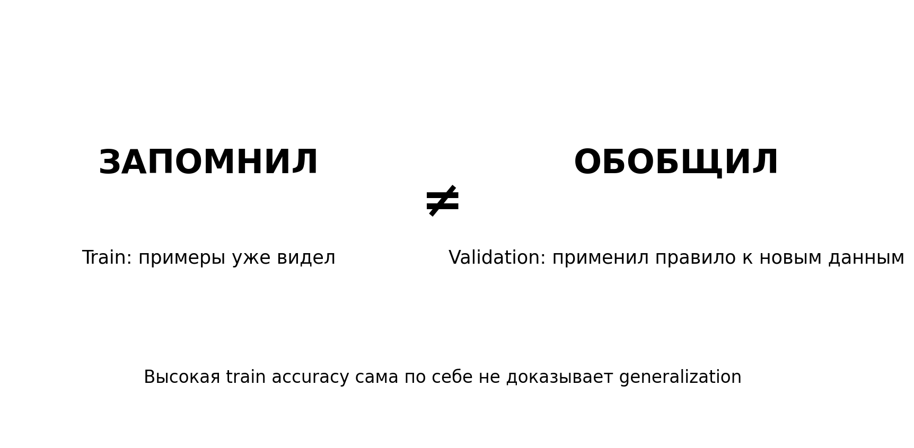
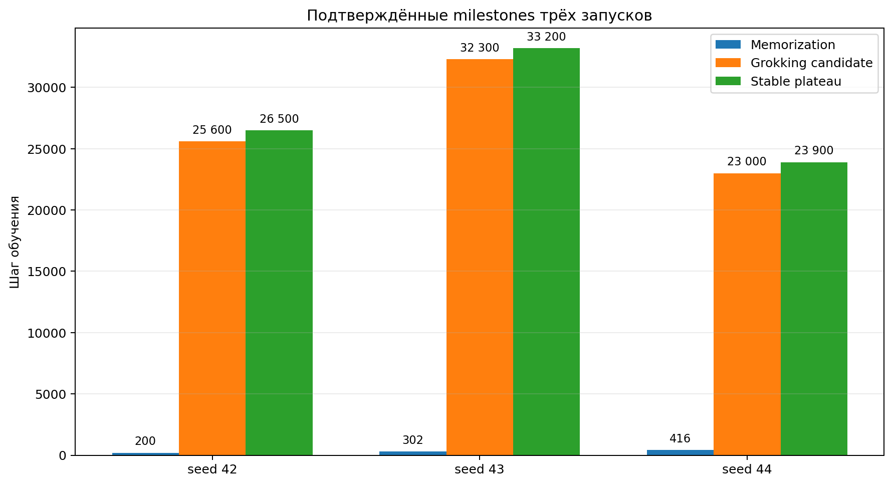
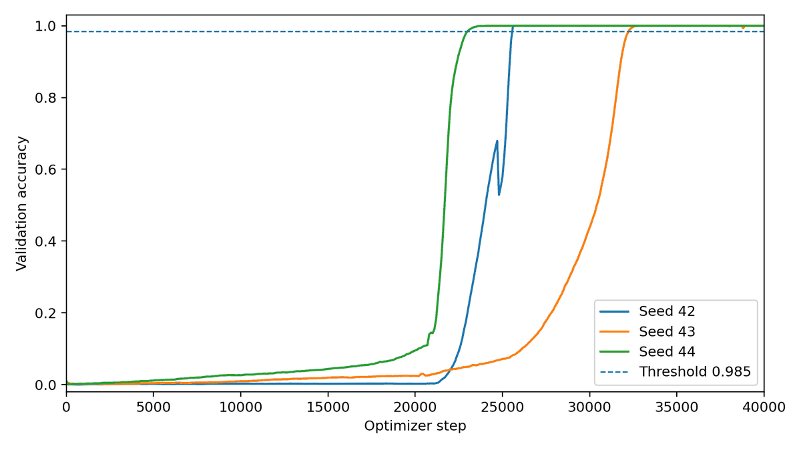
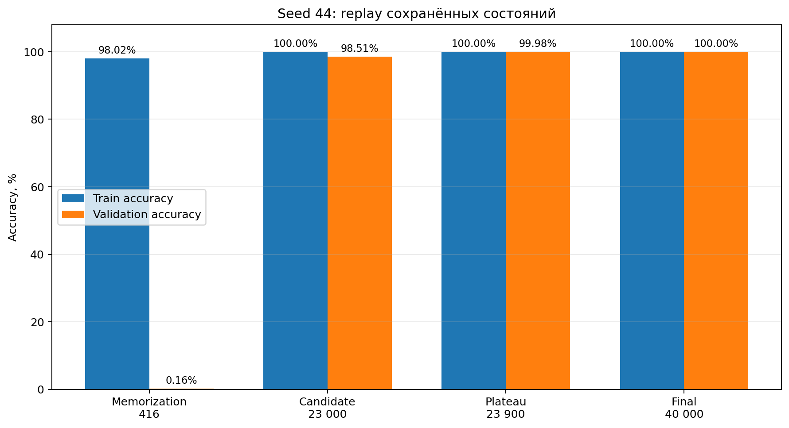
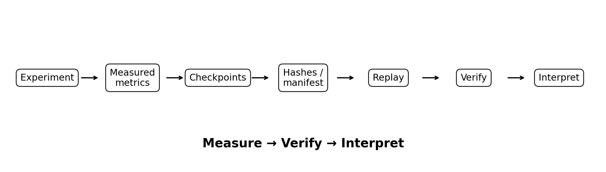

Нейросеть может почти идеально отвечать на примеры, на которых обучалась, и при этом проваливаться на новых. Это простое различие — «запомнил ≠ обобщил» — и есть удобная точка входа в феномен grokking: модель сначала запоминает обучающую выборку, а способность обобщать появляется значительно позже.
В Grokking Lab я хотел не просто получить красивую кривую обучения, а собрать воспроизводимый эксперимент: фиксировать конфигурацию, seed, milestones, checkpoints и измеренные метрики, а затем проверять сохранённые состояния повторным forward pass. Поэтому основной принцип проекта — evidence first: сначала измерение и проверяемый артефакт, затем интерпретация.
Эксперимент

Рис. 1. «Запомнил ≠ обобщил»: высокая точность на train ещё не означает generalization.
Задача намеренно простая: (a + b) mod 113. Модель получает два числа и должна предсказать результат сложения по модулю 113. Это удобно для исследования: правильный ответ однозначен, а train и validation можно разделить так, чтобы отличить запоминание конкретных пар от применения общей закономерности.
Базовая конфигурация: один Transformer-слой, d_model=128, 4 attention heads, d_mlp=512, ReLU, без normalization и dropout; full-batch AdamW, learning rate 0.001, weight decay 1.0; 30% таблицы для обучения и 70% для validation; 40 000 optimizer steps. Замороженный пакет seed 42 и полные архивы seed 43 и 44 доступны в публичном репозитории; прямые ссылки приведены в конце статьи.
Что произошло
Seed 42 достиг порога memorization на шаге 200. Generalization candidate был зафиксирован на шаге 25 600, stable plateau — на 26 500. Финальные train и validation accuracy после 40 000 шагов равны 1.0000. Между быстрым запоминанием и поздним обобщением — более 25 тысяч шагов обучения.
Дополнительные подтверждённые запуски той же постановки дали ту же качественную картину, но с другим временем перехода: seed 43 — 302 / 32 300 / 33 200; seed 44 — 416 / 23 000 / 23 900 для memorization / grokking candidate / plateau соответственно. Все три запуска завершились с train accuracy 1.0000 и validation accuracy 1.0000.
Критерии заданы заранее: memorization означает train accuracy ≥0.98, generalization candidate — первое измеренное достижение validation accuracy ≥0.985. Плато фиксируется после 10 последовательных проверок выше или на пороге 0.985. При интервале 100 шагов это 900 шагов между первой и десятой проверками.
Разрешение измерений различается: для исторического seed 42 шаг memorization определён по сетке логирования через 100 шагов; для seed 43 и 44 он проверялся после каждого optimizer step. Generalization проверялась через 100 шагов, поэтому candidate — первая зафиксированная точка выше порога, а не обязательно точный шаг его пересечения.

Рис. 2. Подтверждённые milestones для seed 42/43/44.
Это важно: повторяется не точный момент перехода, а сам сценарий «быстрое memorization → длинная задержка → generalization». Разброс между seed показывает, что одной эффектной кривой недостаточно и что время перехода само по себе является предметом исследования.

Рис. 3. Validation accuracy для seed 42, 43 и 44. Пунктиром отмечен порог 0.985. Для проверки чисел следует использовать исходные training_timeseries.json из пакетов экспериментов.
Почему одного графика мало
График можно построить из неправильного файла, смешать результаты запусков или потерять связь между checkpoint и конфигурацией. Поэтому Grokking Lab сохраняет исходные метрики и состояния модели. Пакет seed 42 содержит 401 измеренную запись от шага 0 до 40 000, пять PyTorch state-dict checkpoints с SHA-256, manifest, timeseries, event detection и checkpoint replay. Для seed 43 и 44 сохранены по 403 записи: та же регулярная сетка и две соседние точки вокруг порога memorization.
Граница воспроизводимости остаётся явной. Исторический seed 42 не сохранил исходный source-code hash и отдельный файл split indices, поэтому byte-identical reproduction внутреннего скрипта не заявляется. Seed 44 дополнительно содержит dataset_split.json, environment_lock.json и source_hash_manifest.json. При этом Git dirty-state detection для него была недоступна: наличие хешей исходников не означает подтверждённого чистого состояния Git.

Рис. 4. Seed 44: replay сохранённых состояний показывает переход от memorization к generalization.
При этом функциональная проверка сохранённых состояний выполняется повторным forward pass. Для seed 44 replay особенно наглядно показывает фазовый разрыв: на шаге 416 train accuracy = 0.9802, а validation accuracy = 0.0016; на шаге 23 000 — 1.0000 и 0.9851; на plateau 23 900 validation accuracy = 0.9998; в финале обе accuracy равны 1.0000. Зафиксированный replay_max_abs_diff = 0.0.
При подготовке публикации проверены полные архивы seed 43 и 44: целостность ZIP, сетка и уникальность записей, порядок timestamps, значения milestones и SHA-256 всех пяти checkpoints каждого запуска. Метрики сохранённых replay-отчётов совпали с соответствующими строками timeseries с расхождением 0.0. Сам replay выполнен исходным PyTorch-контуром; эта проверка сопоставляла артефакты и не запускала новый независимый forward pass или повторное обучение.
Проверяемые свидетельства

Рис. 5. Evidence-first контур: интерпретация идёт после измерения и проверки.
Подход можно свести к короткой цепочке: Experiment → measured metrics → checkpoints → manifest/hashes → replay → verify → interpret. LLM в этом контуре не создаёт метрики и не решает, каким должен быть результат; он может только интерпретировать уже измеренные данные. Это полезно далеко за пределами grokking: эксперимент становится не рассказом о результате, а пакетом проверяемых свидетельств.
Что эти результаты не доказывают
Три запуска не доказывают универсальный механизм grokking. Из них нельзя заключить, что эффект возникнет при любой архитектуре, задаче или наборе гиперпараметров; нельзя переносить modular addition напрямую на большие прикладные модели. В этих запусках seed задаёт и инициализацию, и разбиение данных, поэтому их влияние на время перехода не разделено. Корректный вывод уже: в одной зафиксированной постановке delayed generalization воспроизвёлся на seed 42, 43 и 44, а момент перехода заметно различался.
Что дальше
Следующий логичный этап — controlled experiments, где меняется один фактор за раз: weight decay, learning rate, train split, размер модели, normalization или архитектура. Интересен не только финальный accuracy, но и то, возникает ли delayed generalization, когда начинается переход и насколько он устойчив между seed.
Совместная работа с лабораториями
Я открыт к совместной работе с исследовательскими группами, которым интересны grokking, delayed generalization, mechanistic interpretability и воспроизводимость ML-экспериментов. Особенно полезен формат независимого воспроизведения и проверки альтернативных гипотез на одном и том же evidence-first контуре. Хороший следующий эксперимент — не тот, который подтверждает нашу интерпретацию, а тот, который способен её опровергнуть.
Вывод
Grokking наглядно показывает простую вещь: идеальный результат на обучающих данных ещё не означает, что модель освоила закономерность. В наших трёх запусках memorization возникал на шагах 200–416, а generalization candidate — только на 23 000–32 300. Поэтому главный вопрос теперь не «можно ли увидеть grokking?», а «что управляет моментом перехода от запоминания к обобщению?»
Проект Grokking Lab содержит исполняемый PyTorch core, замороженные исследовательские артефакты, проверки provenance и целостности, а также checkpoint replay. Результаты исследования следует отличать от готовности экспериментального MVP к прикладному использованию.
Данные и код
Репозиторий: https://github.com/IgorRybakoff/grokking-lab
Пакет seed 42: https://github.com/IgorRybakoff/grokking-lab/tree/main/artifacts/p113_seed42_40k
Архивы seed 43 и 44 и описание проверки: https://github.com/IgorRybakoff/grokking-lab/tree/main/evidence/three_seeds
Скачать seed 43: https://github.com/IgorRybakoff/grokking-lab/raw/refs/heads/main/evidence/three_seeds/exp_1785406284582_p113_FULL.zip
Скачать seed 44: https://github.com/IgorRybakoff/grokking-lab/raw/refs/heads/main/evidence/three_seeds/exp_p113_seed44_research_v04_FULL.zip